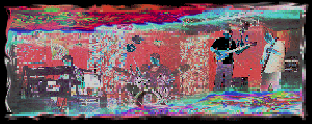
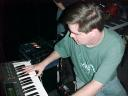
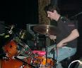
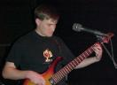
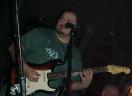
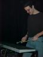

Kurt "Hammond Organ Envy" Kistler (keyboards, vocals)
Terry "Umlauts Optional" McIntyre (drums, vocals)
Kyle "the Giant Bass Player" Grundmann (bass, vocals)
Brian "Taper" Cox (guitar, vocals)
Cliff "MalletKAT" McCarthy (MIDI xylophone, percussion)
Magpu is a Dallas, TX area band that plays original, eclectic, progressive
music. Influences include King Crimson, Phish, Frank Zappa,
Rush, Ozric Tentacles, MMW, Disco Biscuits, and many others.
Magpu tunes have little or no vocals, and are hazardous to your ego if
dancing is attempted. It is music aimed squarely at the brain,
not the butt (although detours through the spleen and large
intestine occasionally take place.)
Brian, Kyle, and Kurt had been playing together since mid 1997 with other
drummers, but Magpu proper formed in January 1998 when Brian
responded to an ad placed by Terry seeking other musicians to
make "recreational" music. Cliff began playing with the group
in October 1999.
Magpu's idea of "recreation" is sweating to death in a small bedroom
while arguing over what time signature or key a given song is in.
Magpu has gigged in Dallas, TX at such clubs as "Trees", "Club Dada",
"The Rock", "The Galaxy Club", "Poor David's Pub", and "The Home Bar".
We have also played once in Austin at a crappy Mexican Restaurant
called "Polvo's" for a crowd almost as large as the waitstaff.
Let us never speak of it again. :)
Magpu welcomes audience taping of their live shows. Brian's mic rig
and DAT are at all the shows, so feel free to bring a deck and
cables and patch out.